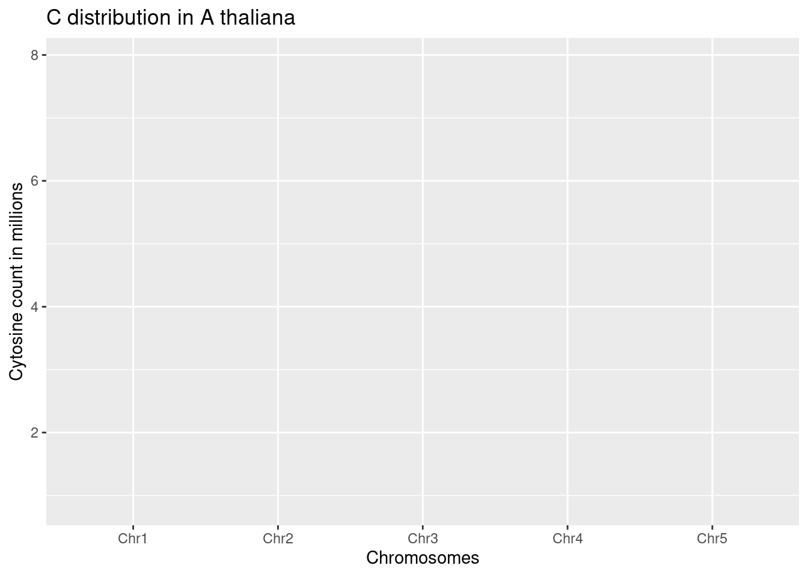
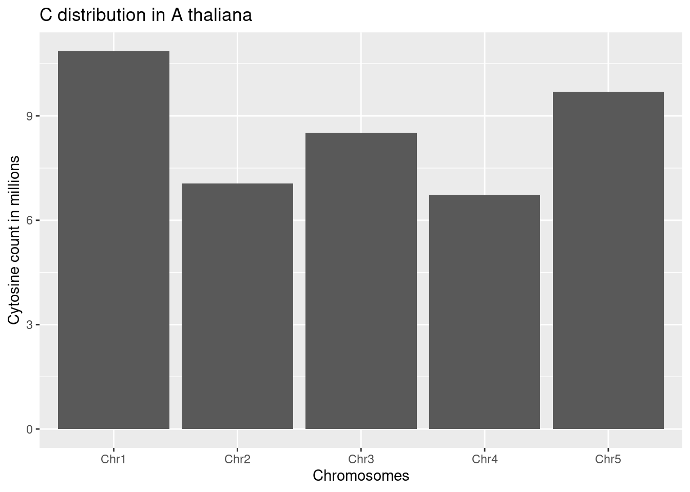
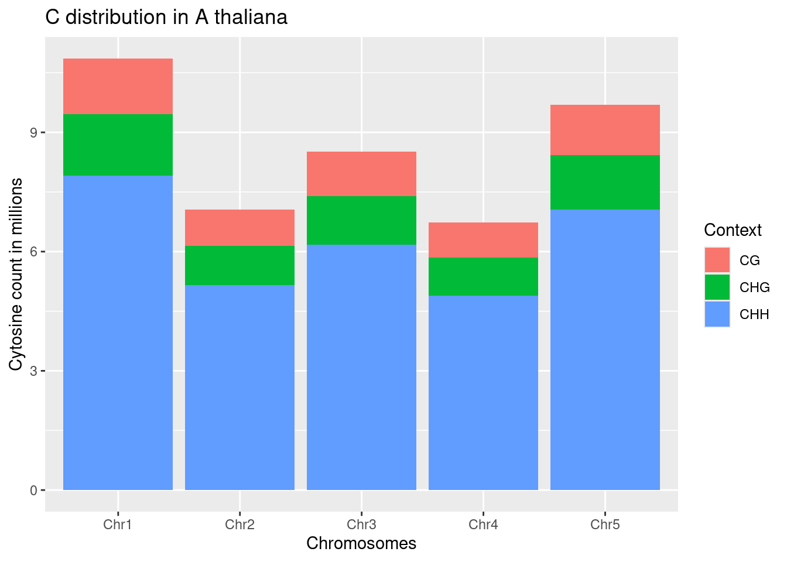
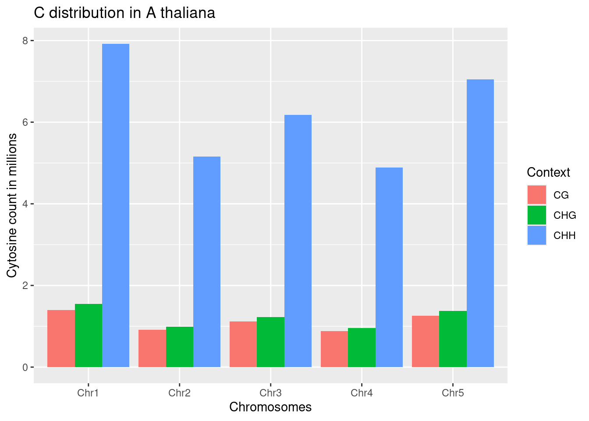
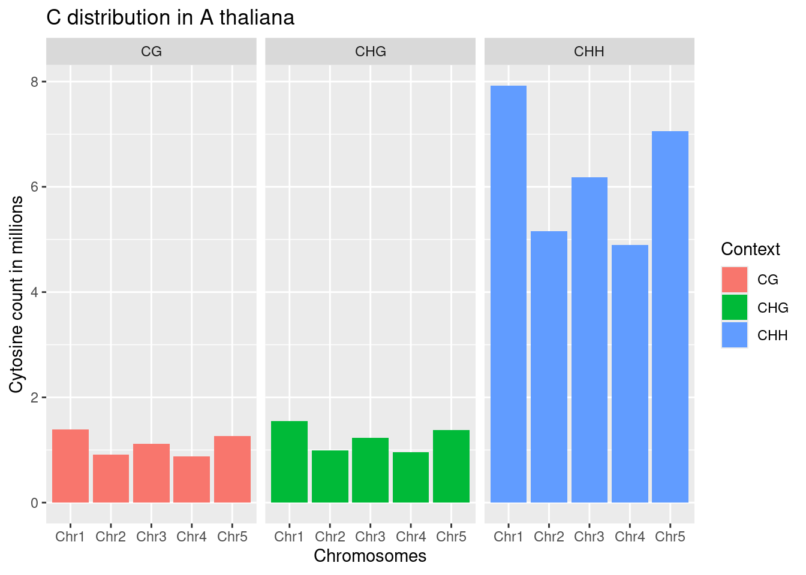
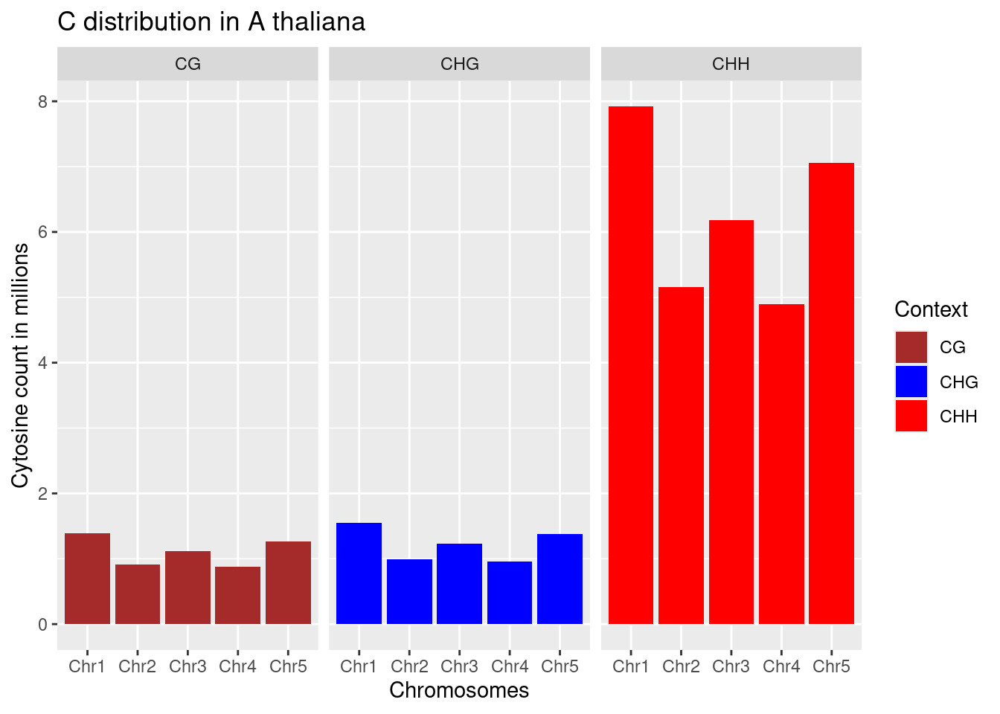
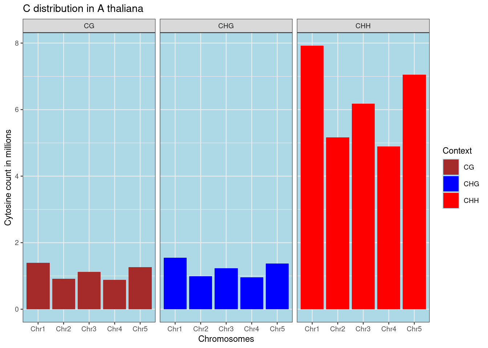
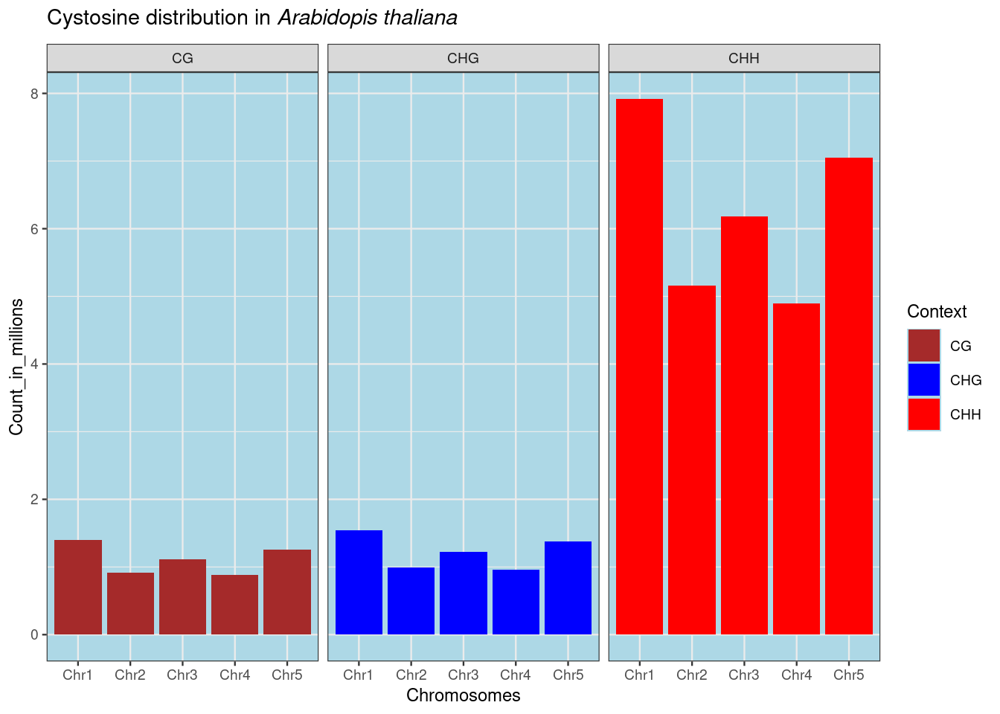

Chapter 20 Analysis
Invoke the libraries
##
## Attaching package: 'data.table'## The following objects are masked from 'package:dplyr':
##
## between, first, lastRead the data using the fread function
View the data
Look at the data
## Classes 'data.table' and 'data.frame': 15 obs. of 4 variables:
## $ Chromosome : chr "Chr1" "Chr2" "Chr3" "Chr4" ...
## $ Context : chr "CG" "CG" "CG" "CG" ...
## $ Count : int 1394740 915144 1118062 879170 1260598 1543980 988829 1225767 957674 1377407 ...
## $ Count_in_millions: num 1.395 0.915 1.118 0.879 1.261 ...
## - attr(*, ".internal.selfref")=<externalptr>calculate the summary statistics
## Chromosome Context Count Count_in_millions
## Length:15 Length:15 Min. : 879170 Min. :0.8792
## Class :character Class :character 1st Qu.:1053446 1st Qu.:1.0534
## Mode :character Mode :character Median :1377407 Median :1.3774
## Mean :2857317 Mean :2.8573
## 3rd Qu.:5025181 3rd Qu.:5.0252
## Max. :7917805 Max. :7.9178Do the data have null values?
## [1] 0## [1] "data.table" "data.frame"20.1 Plotting
20.1.1 Base set up
- Define the graph skeleton
- Define the aesthetics
- Define the labels
graph=ggplot(methylated_c,
aes(x=Chromosome, y=Count_in_millions))+ #graph aesthetics
labs(x="Chromosomes", y="Cytosine count in millions", title="C distribution in A thaliana") #graph labels
print(graph)
- Define the type of graph - geoms

- Add some depth to the chart - introduce the third variable “Context” Make it a stacked bar chart

- Additional modifications-grouped bar chart

- Faceting - Group the charts by context Faceted graphs

- Using predefined colours

- Modifying the background colour

- One single step - Combine the above steps into one
my_title = expression(paste("Cystosine distribution in ", italic("Arabidopis thaliana")))#Define the title
graph_final = ggplot(methylated_c, aes(x=Chromosome, y=Count_in_millions))+
labs(x="Chromosomes", title = my_title) +
facet_grid(~Context) +
geom_col(position="dodge")+
aes(fill=Context)+scale_fill_manual(values = c("brown", "blue", "red"))+
theme_bw(base_size = 9)+theme(panel.background = element_rect(fill="lightblue"))
print(graph_final)
The expression is used to combine name italics and normal fonts - this helps biologists include botanical names in charts
- The graphs can be exported as images or pdf. This can be done in RStudio <–Show screenshots if possible–>